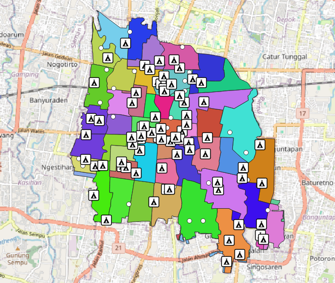

Web Geographic Information System (WEBGIS)
About Peta Kota Yogyakarta
Peta Yogyakarta adalah peta yang menunjukkan lokasi dan informasi tentang wilayah kota Yogyakarta. Peta ini mencakup wilayah yang di kota yogyakarta. Peta kota Yogyakarta dengan persebaran rumah sakit dan persearan objek wisata adalah peta yang menunjukkan lokasi dan informasi tentang rumah sakit dan objek wisata di kota Yogyakarta. Peta ini dapat berguna untuk para pengunjung yang ingin mencari rumah sakit atau objek wisata yang berada di kota Yogyakarta. Peta ini juga dapat berguna untuk pemerintah dan pengelolaan wilayah untuk mengetahui lokasi dan ketersediaan fasilitas rumah sakit dan objek wisata di kota Yogyakarta. Peta ini dapat dibuat dengan bantuan data geospasial yang menunjukkan lokasi rumah sakit dan objek wisata, serta informasi lainnya yang dapat digunakan untuk membuat peta yang lebih detail dan akurat. Peta Yogyakarta merupakan salah satu peta yang banyak dicari orang karena wilayah ini memiliki kebudayaan tradisional yang masih kental dan merupakan tempat wisata yang menarik untuk dikunjungi. Peta ini dapat membantu para pengunjung dari luar Yogyakarta untuk mencari desa tertentu dan meminimalisir kebingungan.
Gambar Peta kota Yogyakarta
